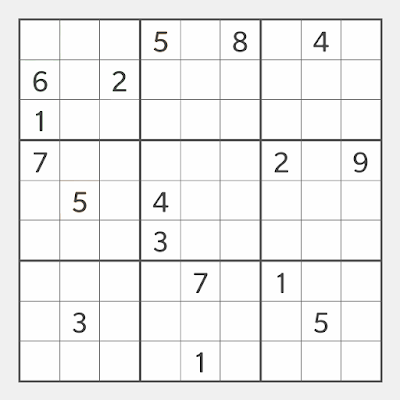
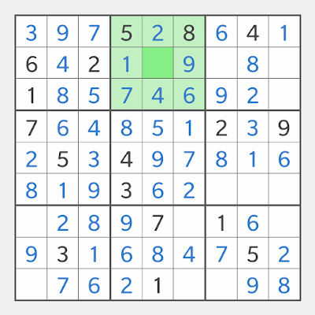

数独的规则和术语
数独的盘面分有9个宫，每一宫又分为9个格，共9行9列9宫81格。游戏开始时部分格中预先填有数字1到9。

游戏的目标是在空格中填入数字1到9，使得每行每列和每个宫中数字1到9只出现一次。
数独盘面中的行、列和宫又统称单元。
9个行从上到下为行1至行9；
9个列从左到右为列1至列9；
9个宫从左到右从上到下为宫1至宫9；
81个格则由两位数来标记：十位表示其所在的宫，个位表示其在宫中的位置。
让我们来熟悉一下这些术语。在下面的盘面中宫2被高亮显示，其中的唯一空格是第5格，我们说格25是宫2中唯一的空格。由于宫2中只缺数字3，所以数字3应该填入格25，简单说答案是253。

在下面的盘面中行3被高亮显示，其中的唯一空格位于宫3中第的9格，我们说格39是行3中唯一的空格。由于行3中只缺数字3，所以数字3应该填入格39，简单说答案是393。
在下面的盘面中列8被高亮显示，其中的唯一空格位于宫6中第的8格，我们说格68是列8中唯一的空格。由于列8中只缺数字7，所以数字7应该填入格68，简单说答案是687。
以上就是您需要了解的所有术语，其中格的记法以宫为本，与其它网站的各种横竖坐标记法有所不同。原因是人的视线更容易定位9个宫以及定位宫中的9个格，相比较要定位行或列以及其中的格就需要视线扫描。
宫是数独的重要角色，如果没有了宫，数独就只是一个拉丁方阵（拉丁方阵由瑞士數學家欧拉命名，所以有些网站说数独起源瑞士）。拉丁方阵被研究了几百年，没有人拿它当游戏玩，是数独的发明者美国退休建筑师
Howard Garns
加上了宫的限制，才使得它变成趣味无穷的世界第一智力游戏。
本文中的谜题出自 http://school.maths.uwa.edu.au/~gordon/sudokumin.php 该资源为知识共享署名2.5许可，版权所有 Gordon Royle 和西澳大利亚大学。